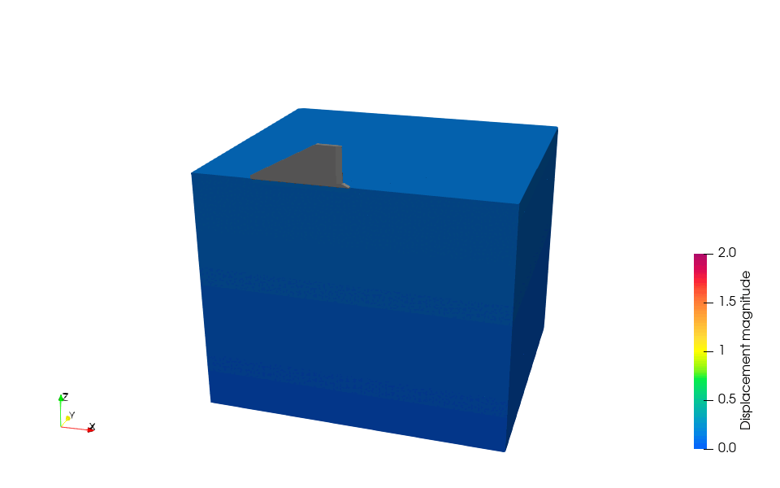
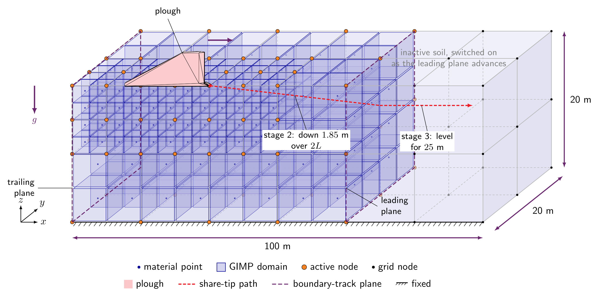
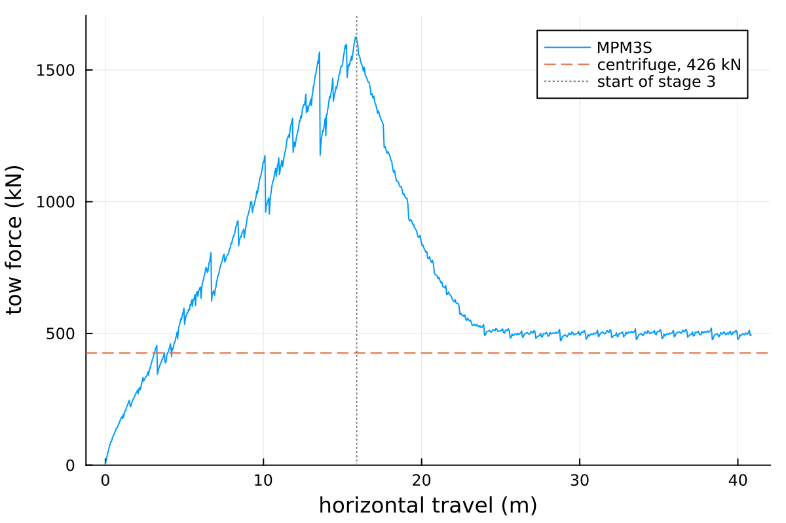

Tutorial 5: Plough¶

Introduction¶
This tutorial drives a plough through a bed of dry sand along a prescribed path and compares the force needed to tow it with the \(426\) kN measured in the centrifuge tests of Robinson et al. 1.
The problem uses the gravity stage from Tutorial 1, the displacement-controlled rigid body with contact from Tutorial 2, the Willam-Warnke sand with depth-dependent stiffness from Tutorial 3, and the dynamic time integration, frictional contact and moving boundaries from Tutorial 4. Unlike the sphere of Tutorial 4, the plough is not free: its whole path is prescribed, so the soil only decides the force needed to move it. The contact between the GIMPs and the plough uses the dynamic implicit 3D material point-to-rigid body contact approach of Bird et al. 2.
This tutorial has four sections:
Problem description¶
You will model a plough being driven into, and then along, a bed of sand. To do this, you will define the soil, the plough, the three loading stages, the solver and the output in the input file, using the input_data.json file format.
Figure 1 shows the model at the start of stage 2. To reduce the problem size, only half of the plough and soil is modelled, using the vertical \(xz\) plane of symmetry at \(y = 0\). The plough starts on the soil surface and moves at \(0.2\) m/s down to a depth of \(1.85\) m over two plough lengths, then level at \(0.1\) m/s for \(25\) m. Instead of solving the whole length of soil, a boundary track keeps only a window of soil active, from \(5\) m behind to \(10\) m ahead of the plough. The elements around the plough are refined down to \(0.05\) m; the figure only shows this schematically.

Material domain: The soil is \(100\) m long, \(20\) m wide and \(20\) m deep. As in Tutorial 3, the mesh is refined around the rigid body: the elements which intersect the plough are refined to \(0.05\) m, while those far from it are \(5\) m, and every element is created with \(2 \times 2 \times 2\) material points. Because the mesh is an octree whose smallest element is \(0.05\) m, MPM3S adjusts these sizes (see how element sizes set the mesh):
- element sizes are rounded down to a power-of-two multiple of \(0.05\) m, so the mesh is never coarser than requested: the \(5\) m elements become \(0.05 \times 2^6 = 3.2\) m;
- the \(x\) and \(y\) dimensions are rounded up to whole elements: \(102.4 \times 22.4\) m;
- the depth is rounded up to a whole row of material points (\(1.6\) m): \(20\) m becomes \(20.8\) m.
Loading: Three stages, with \(L = 7.93\) m the length of the plough:
- Stage 1 - initial stresses: static; the plough is switched off and gravity is ramped up over 5 load steps.
- Stage 2 - penetration: dynamic, \(79.3\) s in steps of \(0.05\) s; the plough is placed on the soil surface, then moves \(0.2\) m/s in \(+x\) while it descends, reaching a depth of \(1.85\) m after \(2L = 15.86\) m.
- Stage 3 - horizontal penetration: dynamic, \(250\) s in steps of \(0.05\) s; the plough moves \(0.1\) m/s in \(+x\) at a constant depth of \(1.85\) m, for \(25\) m.
Boundary conditions: The boundary conditions are defined separately for each stage. In every stage the base is fixed, and the side at \(y = 0\) (the plane of symmetry) and the opposite side carry rollers; the top face lies in the empty space above the soil, so its condition has no effect. Only the two ends, the \(x\) faces, change:
- Stage 1 - initial stresses: all vertical sides are rollers, the bottom face is fixed.
- Stages 2 and 3: a boundary track replaces both ends with fixed planes that move with the plough: one \(5\) m behind it, which deletes the soil the plough leaves behind, and one \(10\) m ahead of it. Both distances are rounded outward to whole \(3.2\) m elements. On the plane of symmetry, \(y = 0\), the roller stops the soil moving in \(y\) but leaves it free to slide in \(x\) and \(z\), which is exactly the symmetry condition: the modelled half behaves as one half of the full plough and soil.
Material: Willam-Warnke elasto-plastic dry sand at a relative density of \(D_r = 44\%\), with the parameters from the Brinkgreve correlations 3, as in Tutorial 3:
| Property | Correlation | Value at \(D_r = 44\%\) | Input key |
|---|---|---|---|
| Reference Young's modulus | \(E^{ref} = 60\,000\; D_r/100\) kPa | \(26.4\) MPa | "E": 2.64e7 |
| Friction angle | \(\phi = 28 + 12.5\; D_r/100\) | \(33.5^\circ\) | "friction angle": 33.5 |
| Dilation angle | \(\psi = -2 + 12.5\; D_r/100\), not below 0 | \(3.5^\circ\) | "dilation angle": 3.5 |
| Dry unit weight | \(\gamma = 15 + 4\; D_r/100\) kN/m\(^3\) | \(16.76\) kN/m\(^3\) | - |
| Dry density | \(\rho = \gamma/g\), with \(g = 10\) m/s\(^2\) | \(1676\) kg/m\(^3\) | "density": 1676.0 |
| Stiffness exponent | \(m = 0.7 - D_r/320\) | \(0.5625\) | "exponent": 0.5625 |
| Earth pressure at rest | \(K_0 = 1 - \sin\phi\) | \(0.4481\) | "reference stress" (below) |
| Poisson's ratio | - | \(0.25\) | "nu": 0.25 |
| Cohesion | - | \(0.3\) kPa | "cohesion": 300.0 |
As in Tutorial 3, the reference stress for the depth-dependent stiffness is \(p^{ref}/K_0 = 100/0.4481 = 223.2\) kPa.
Plough: The plough is a blade with a share at its foot, \(7.93\) m long, \(3.15\) m tall and \(0.375\) m wide, drawn in plough.stl with the share pointing in \(+x\). It is centred on the plane of symmetry, so half its width, \(0.1875\) m, lies in the modelled soil. The plough is a single rigid body welded to one rigid body point at its centroid. Its motion is prescribed in every stage, so it has no free degree of freedom and its mass plays no part: the point is given a nominal mass of \(1\) kg. Frictional contact between the plough and the sand uses \(\mu = 0.3\).
Solver: Newton-Raphson, pseudo-static for stage 1 and implicit dynamic for stages 2 and 3.
Input setup¶
The input file is a single JSON object - a human-readable, editable text file. The complete file for this problem can be found here, and every key is described on the input_data.json file format page.
input_data_plough_dr44.jsonMaterial points¶
- One layer of Willam-Warnke sand, with the properties from the Problem description (material points).
- A \(100 \times 20\) m footprint, whose \(y = 0\) side is the plane of symmetry.
- \(5\) m base elements (rounded to \(3.2\) m), each starting with \(2 \times 2 \times 2\) material points.
"material points": {
"extra capacity": 1.2,
"element size": 5.0,
"number of material points per element 1": 2,
"material size": { "min": [0.0, 0.0], "max": [100.0, 20.0] },
"layers": [
{
"thickness": 20.0,
"material": { "type": "willam warnke",
"E": 2.64e7, "nu": 0.25,
"friction angle": 33.5, "dilation angle": 3.5, "cohesion": 300.0,
"density": 1676.0,
"E overburden": { "reference stress": 223183.0, "exponent": 0.5625 } }
}
]
},
Rigid body¶
- The plough is one rigid-body system with a single point, at the plough's centroid, \((4.549, 0, 1.244)\) in the frame
plough.stlis drawn in. - All six of its degrees of freedom are fixed; stages 2 and 3 replace them with the prescribed motion. Nothing is left free, so the mass and rotational inertia are nominal values of \(1\).
- The plough surface is welded to the point (STL files), and its tetrahedral mesh is stored in the mesh-cache file.
plough.stlis drawn with its rear at \(x = 0\), its base at \(z = 0\) and its width centred on \(y = 0\). "offset"moves the whole system \(5\) m in \(+x\), so that \(5\) m of soil lies behind the plough, and \(20\) m up, to about the soil surface; stage 2 then places it exactly on the surface.
"rigid bodies": [
{
"offset": [5.0, 0.0, 20.0],
"points": [
{ "position": [4.549060, 0.0, 1.244252], "mass": 1.0, "rotational inertia": [1.0, 1.0, 1.0],
"boundary conditions": ["fixed", "fixed", "fixed", "fixed", "fixed", "fixed"] }
],
"stl files": [
{ "name": "plough", "stl": "plough.stl", "mesh cache": "plough_mesh.txt", "point": 1 }
]
}
],
Contact¶
- Coulomb friction with \(\mu = 0.3\) between the plough and the sand (contact properties).
Stage 1: initial stresses¶
- Static, with the plough switched off.
- Gravity is ramped up from zero over 5 load steps.
- A uniform \(3.2\) m mesh (adaptivity).
- Rollers on the four vertical faces and a fixed base; the top face lies in the empty space above the soil (boundary conditions).
Stage 2: penetration¶
- Dynamic, \(79.3\) s in steps of \(0.05\) s: \(1586\) steps.
"rigid body surface placement": "on"first moves the plough vertically so that its base rests on the soil surface."rigid body boundary conditions"replaces the plough's conditions (system 1, point 1) for this stage, prescribing every step (rigid body boundary conditions):- \(0.01\) m in \(+x\), which is \(0.2\) m/s;
- \(0.0011665\) m in \(-z\), which is \(1.85/1586\), so the plough reaches \(1.85\) m below the surface after \(15.86\) m, two plough lengths.
- \(\beta = 0.5\) and \(\gamma = 1.0\) add numerical damping.
- The mesh is refined to \(0.05\) m wherever the plough surface is (adaptivity).
"boundary track"replaces the two \(x\) ends with fixed planes that follow the plough (boundary track):- one \(5\) m behind it, which deletes the soil the plough leaves behind;
- one \(10\) m ahead of it; the soil beyond it stays inactive until the plane reaches it.
{
"type": "dynamic",
"dt": 0.05,
"final time": 79.3,
"beta": 0.5,
"gamma": 1.0,
"rigid bodies": "on",
"rigid body surface placement": "on",
"adaptivity": { "type": "rigid body surface", "element size": 0.05 },
"rigid body boundary conditions": [
{ "system": 1, "point": 1,
"boundary conditions": [{ "prescribed": 0.01 }, "fixed", { "prescribed": -0.0011664565 }, "fixed", "fixed", "fixed"] }
],
"boundary conditions": { "min": ["fixed", "roller", "fixed"], "max": ["roller", "roller", "fixed"] },
"boundary track": {
"min": { "type": ["fixed", "off", "off"], "distance": [5.0, 0.0, 0.0],
"advance": ["positive", "positive", "positive"], "remove": ["yes", "no", "no"] },
"max": { "type": ["fixed", "off", "off"], "distance": [10.0, 0.0, 0.0],
"advance": ["positive", "positive", "positive"], "remove": ["no", "no", "no"] }
}
},
Stage 3: horizontal penetration¶
- Dynamic, \(250\) s in steps of \(0.05\) s: \(5000\) steps.
- The plough moves \(0.005\) m in \(+x\) every step, which is \(0.1\) m/s, \(25\) m in all, and is held at its depth.
- The plough is already in place, so
"rigid body surface placement"is"off". - The refinement and the boundary track are the same as in stage 2.
{
"type": "dynamic",
"dt": 0.05,
"final time": 250.0,
"beta": 0.5,
"gamma": 1.0,
"rigid bodies": "on",
"rigid body surface placement": "off",
"adaptivity": { "type": "rigid body surface", "element size": 0.05 },
"rigid body boundary conditions": [
{ "system": 1, "point": 1,
"boundary conditions": [{ "prescribed": 0.005 }, "fixed", "fixed", "fixed", "fixed", "fixed"] }
],
"boundary conditions": { "min": ["fixed", "roller", "fixed"], "max": ["roller", "roller", "fixed"] },
"boundary track": {
"min": { "type": ["fixed", "off", "off"], "distance": [5.0, 0.0, 0.0],
"advance": ["positive", "positive", "positive"], "remove": ["yes", "no", "no"] },
"max": { "type": ["fixed", "off", "off"], "distance": [10.0, 0.0, 0.0],
"advance": ["positive", "positive", "positive"], "remove": ["no", "no", "no"] }
}
}
],
Solver¶
- Newton-Raphson iterations to a tolerance of \(10^{-6}\) in each step (solver).
- A step that has not converged after 20 iterations is retried with half the increment.
- The same ghost stabilisation settings as Tutorial 3.
Deploying and running the problem¶
MPM3S is written in the Julia programming language. See the installation guide for installing Julia and MPM3S, and Tutorial 1 for a first, small run.
Working in the MPM3S folder
Julia runs in the MPM3S folder - the folder you downloaded - throughout this tutorial, and every path in the commands and scripts is relative to it. The input file is read from validation_data_and_jsons/input_data_plough_dr44.json, and the output folder csv_plough_dr44 is written to the MPM3S folder.
terminalSetting up the problem¶
The input file for this tutorial comes with MPM3S, as validation_data_and_jsons/input_data_plough_dr44.json, together with the plough geometry - plough.stl and its mesh cache, plough_mesh.txt; the input file is the same as the complete input file. The STL and mesh-cache paths in the input file are relative to the input file, so the files must stay in the same folder.
As in Tutorial 1, open a terminal, start Julia with every CPU thread available (-t auto), then move into the folder where you downloaded MPM3S, activate it, install its dependencies with Pkg.instantiate() and load MPM3S. The output folder csv_plough_dr44 is created in the MPM3S folder.
Running the problem¶
Julia is now running in the MPM3S folder and MPM3S loaded. The JSON file for this problem is loaded with MPM3S and is stored in the folder validation_data_and_jsons, the simulations are started with:
This is a large analysis, run on an NVIDIA GPU ("GPU": "on"); without one, set "GPU": "off" and run it on an HPC node.
Reading the output¶
The progress line works as in Tutorial 1, counting through stage 1/3, stage 2/3 and stage 3/3:
- Stage 1: the uniform mesh fills the whole \(102.4\) m background cube with \(3.2\) m elements, \(32^3\) of them, hence \(33^3 = 35\,937\) nodes (
N). - Start of stage 2: MPM3S reports the rigid body surface placement: the plough's base (
body base) is moved byΔzto the soil surface (material top), which has settled slightly below \(20.8\) m under the weight of the sand. - Stages 2 and 3:
Nnow counts the nodes of the active window of soil inside the boundary track, refined around the plough. Steps that do not converge are retried with half the increment (cuts), and material points next to the plough that become too distorted are deleted (del). - End of the analysis: the last line shows the \(6617\) steps of the whole analysis - \(5\) load steps, then \(1586\) and \(5000\) time steps, plus the extra steps from the \(6\) cuts - with \(248\) material points deleted and \(35\,413\) nodes in the refined window.
$ julia -t auto
julia> cd("path/to/MPM3S")
julia> using Pkg; Pkg.activate(".")
Activating project at `path/to/MPM3S`
julia> Pkg.instantiate()
julia> using MPM3S
julia> MPM3S.non_linear_solve("validation_data_and_jsons/input_data_plough_dr44.json");
stage 3/3 ████████████ 100.0% t 250.0/250.0 step 6617 Δt 0.05 NR 5 cuts 6 del 248 N 35413
Viewing the results¶
Tow force¶
csv_plough_dr44/rigid_body.csv has one row per output step, through all three stages, with columns for the plough's point, body1. The time column restarts at the start of each stage.
- Tow force:
body1_reaction force_xis the force the soil exerts on the plough in \(x\). It opposes the motion, so the force needed to tow the plough is minus this. Only half the plough is modelled, so the force on the whole plough is twice that. - Travel:
body1_position_xminus its value at the start. The plough first moves in \(x\) in stage 2, and reaches its full depth at the start of stage 3.
Reference tow force: Robinson et al. 1 towed a \(1/50\) scale model of a cable plough, with the same \(375\) mm wide share, through dry sand in a centrifuge at \(50g\). In their test SR27, in sand at \(D_r = 43\%\), the plough ran at a final depth of \(1.85\) m with a steady horizontal tow force of \(0.17\) kN at model scale, \(426\) kN at full scale (forces scale by \(50^2\) in the centrifuge). The model plough's mass corresponds to \(45\) t at full scale, so part of that force is friction from the plough's weight, which the weightless plough here does not have.
The short Julia script below plots the tow force on the whole plough against its horizontal travel through the whole run, with the measured \(426\) kN, and marks the start of stage 3. Run it from the MPM3S folder, either by copying it into the REPL or by saving it as plough_force.jl and running include("plough_force.jl"). It needs Plots, installed as described in Tutorial 1.
using DelimitedFiles, Plots
data, header = readdlm("csv_plough_dr44/rigid_body.csv", ',', Float64; header=true)
column(name) = data[:, findfirst(==(name), vec(header))]
x = column("body1_position_x")
F = -2 .* column("body1_reaction force_x") ./ 1e3 # tow force on the whole plough (kN)
s3 = findlast(diff(column("time")) .< 0) + 1 # first row of stage 3: where the time last restarts
plot(x .- x[1], F, label="MPM3S", xlabel="horizontal travel (m)", ylabel="tow force (kN)", ylims=(0, 1.05 * maximum(F)))
hline!([426], linestyle=:dash, label="centrifuge, 426 kN")
vline!([x[s3] - x[1]], linestyle=:dot, color=:gray, label="start of stage 3")

While the plough is driven down in stage 2, the tow force rises steadily, to about \(1600\) kN when it reaches its full depth after \(15.9\) m. Much of this comes from forcing the plough down: the soil pushes up on it with a force between two and a half and three times the tow force, and the friction from that acts against the motion. Once the plough runs level in stage 3, the upward force falls away, to about \(110\) kN, and over the next \(8\) m the tow force drops to a steady value. Over the rest of the run it stays between \(470\) and \(535\) kN, with a mean of \(500\) kN, \(17\%\) above the \(426\) kN measured in the centrifuge. Part of the measured force is friction from the model plough's weight, which the weightless plough here does not have.
-
S. Robinson, M.J. Brown, H. Matsui, A. Brennan, C.E. Augarde, W.M. Coombs, and M. Cortis. A cone penetration test (CPT) approach to cable plough performance prediction based upon centrifuge model testing. Canadian Geotechnical Journal, 58(10):1466–1477, 2021. ↩↩
-
Robert E. Bird, Giuliano Pretti, William M. Coombs, Charles E. Augarde, Yaseen U. Sharif, Michael J. Brown, Gareth Carter, Catriona Macdonald, and Kirstin Johnson. A dynamic implicit 3D material point-to-rigid body contact approach for large deformation analysis. International Journal for Numerical Methods in Engineering, 2025. ↩
-
R.B.J. Brinkgreve, E. Engin, and H.K. Engin. Validation of empirical formulas to derive model parameters for sands. In Numerical Methods in Geotechnical Engineering, pages 137–142. CRC Press, 2010. ↩